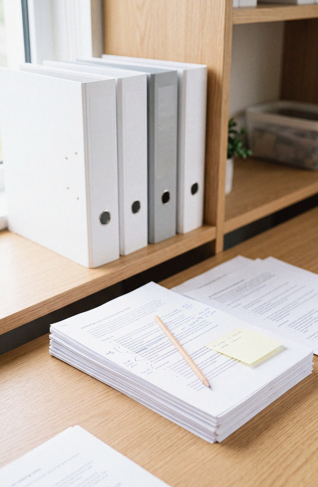
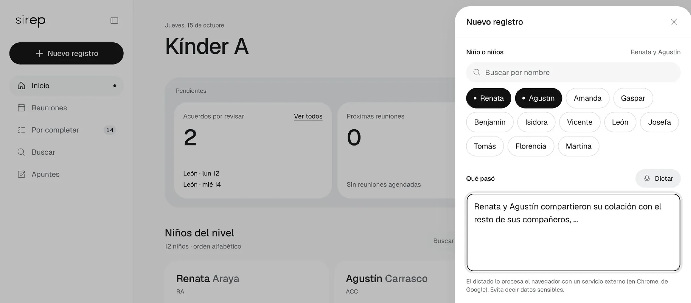
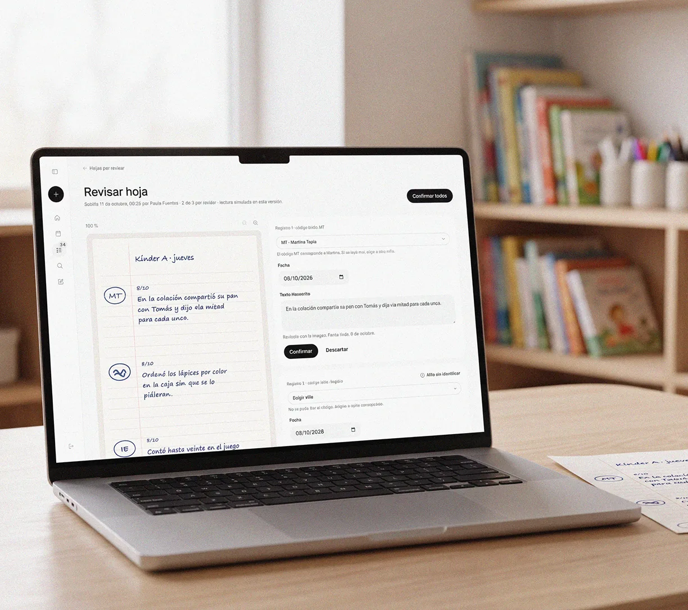

SIREP
A collaborative documentation system that keeps what early childhood educators observe every day from being lost.
2026, in progress
Taller de Título, Diseño UC
Trinidad Burgos
Individual project
Research, testing, service and interface design
Working MVP in testing · Delivery December 2026

( AI-generated mockup )
Knowledge that gets lost between paper folders
Educators see how each child grows every day, yet that knowledge is rarely recorded and ends up in folders no one can retrieve years later. To understand why, I mapped Chile's early childhood network and ran 45 minute remote sessions where educators and trainee teachers sorted features by how much attention they have to spare during the day.

( AI-generated mockups )
Theoretical framework, network mapping, card sorting by available attention, interviews
Around 15 educators and trainee teachers. Three of them also ran self-guided sessions with colleagues at their own schools.
Educators assess children through the national curriculum, not through developmental psychology
The first version spoke the language of developmental psychology, not that of early childhood education.
So I rebuilt the system around the national curriculum and the reality of the classroom, where educators write on paper and phones stay away.
- 01 SeminarFirst frameworkFive developmental dimensions from theory and experts
- 02 TestAttention sortingFeatures ranked by the attention educators have free
- 03 TestCurriculum reframeViews rebuilt around the national curriculum
- 04 BuildWorking platformLogin per role, fictitious data, permissions
- 05 NextFocus groupsTwo in-person rounds with professionals

From a note in the classroom to the child's profile
In the classroom educators write by hand, so SIREP starts on paper. A short note marked with the child's code and the date is scanned with a phone and joins the child's profile, where the team reviews it and organises it by curriculum and moment of the day.

( AI-generated mockups )
Four parts, a platform, paper record cards, a training guide and a brand manual. AI only searches records and never interprets them.
A working MVP for the educator profile, validated with around 15 professionals. Final delivery in December 2026.
Reviewers pushed me to treat children's data protection as a design decision, made visible in a list of what the system does not do.